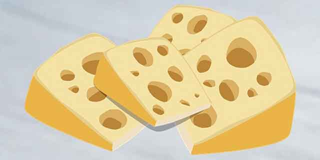
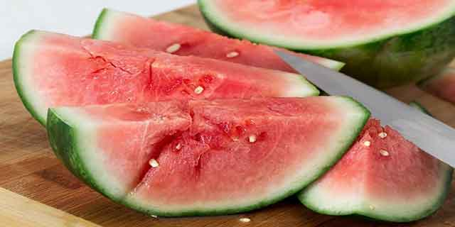
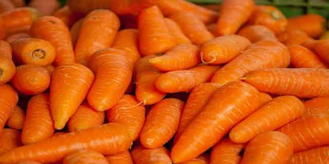
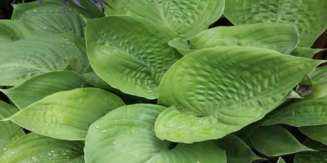
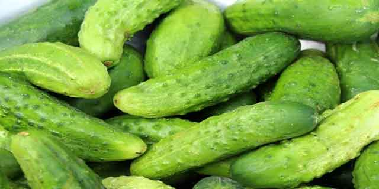
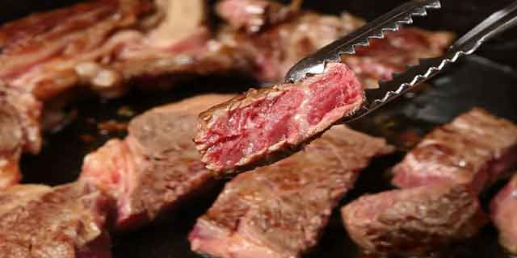
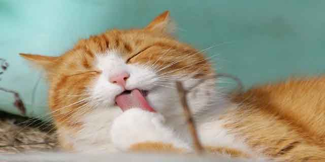

고양이가 사랑하는 음식 6가지
고양이의 이미지는 강아지보다 훨씬 까다로울 것 같다는 생각이 들지만, 의외로 고양이는 다양한 음식을 좋아합니다. 대부분 간식을 즐기며, 고양이가 별도로 선호하는 음식도 있죠. 다만, 고양이에게도 부족한 영양분이 있어서 이 부분만 보충해 준다면 여러 가지 간식과 음식을 활용해서 고양이의 호기심과 관심을 불러일으킬 수 있어요. 고양이가 사랑하는 음식 6가지! 함께 알아볼게요.
[치즈]
고양이는 유제품을 좋아합니다. 강아지가 피해야 할 음식 중 하나인 유제품과 달리 고양이는 유제품 종류를 무척 좋아하는데요. 그 대표적인 종류 중 하나가 바로 치즈입니다. 치즈는 칼슘 함량이 높고 고양이가 씹기에도 아주 적절한 질감을 갖고 있어 고양이가 좋아하는 대표적인 음식이기도 합니다.
[수박]
작은 입으로 수박이라니? 상식적으로 수박을 잘 먹을 수 있을까 생각하지만, 고양이는 수박을 무척 좋아합니다. 수박에는 항산화제와 비타민 그리고 무기질이 다량 함유되어 있는데요. 건강에도 좋고 맛도 좋아 고양이가 선호하는 과일이기도 합니다. 단, 먹기가 상당히 불편하므로 고양이가 먹기 좋은 크기로 잘라주는 것이 좋겠죠?
[당근]
토끼가 사랑하리라 생각했던 당근은 의외로 고양이가 선호하는 채소 중 하나입니다. 특히 당근의 딱딱한 식감을 고양이의 호기심을 자극하고 흥미를 유발해 먹는 과정 자체를 아주 즐기는 편이랍니다. 그뿐만 아니라 브로콜리, 시금치 등의 채소류도 좋아합니다.
[질경이]
질경이는 꿀풀과의 일종으로 고양이가 사랑하는 '캣닙'과 같은 과입니다. 그래서 좋아하는 것인지 아니면 질경이의 맛을 좋아하는 것인지는 잘 모르겠지만, 질경이를 무척 좋아한다는 것은 사실입니다. 만약 질경이를 한 번 준다면 고양이는 더 달라고 울부짖거나 또는 매달릴 가능성이 큽니다!
[오이]
생존을 위해서는 반드시 물이 필요하지만, 의외로 물 먹는 것을 좋아하지 않는 고양이에겐 오이가 도움이 될 수 있습니다. 수분이 절반 이상을 차지하는 오이를 먹는 것은 수분 보충에도 도움이 되고 아삭한 식감으로 재미를 느끼기도 합니다.
[고기]
닭고기, 소고기는 특히 고양이가 좋아하는 음식인데요. 닭고기나 소고기 모두 여러 가지 조리 방법으로 급여해도 좋으며, 소고기는 생식도 가능하다고 합니다. 과거에는 야생에서 자라 그 본능을 잊지 않은 것일지도 모르겠네요!
물론, 이 모든 것이 매일 먹는 주식이 되어서는 안 되겠죠. 아무리 고양이가 사랑하는 음식이라도 고양이 건강에 맞는 적절한 식단을 짜서 급여하는 것이 가장 좋습니다. 또, 좋아하는 음식이 있지만, 피해야 할 음식도 있는 만큼 이 점을 유의하셔서 고양이 건강을 지키는 식단으로 반려묘와의 행복한 날을 길게 만들어 가보시길 바랍니다!
[출처] 고양이가 사랑하는 음식 6가지 ｜ 작성자 펫패밀리